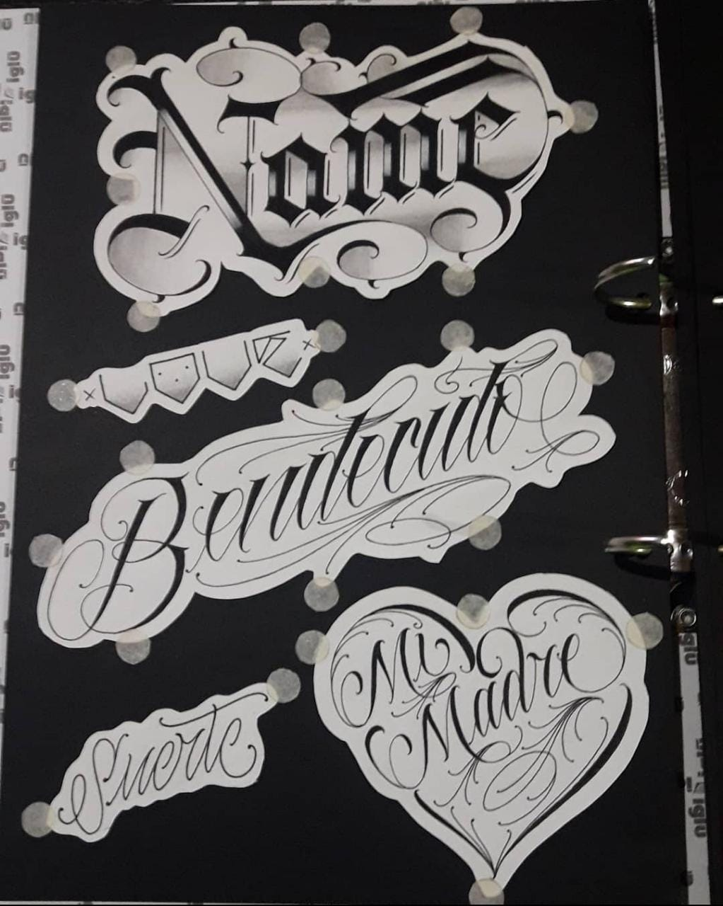
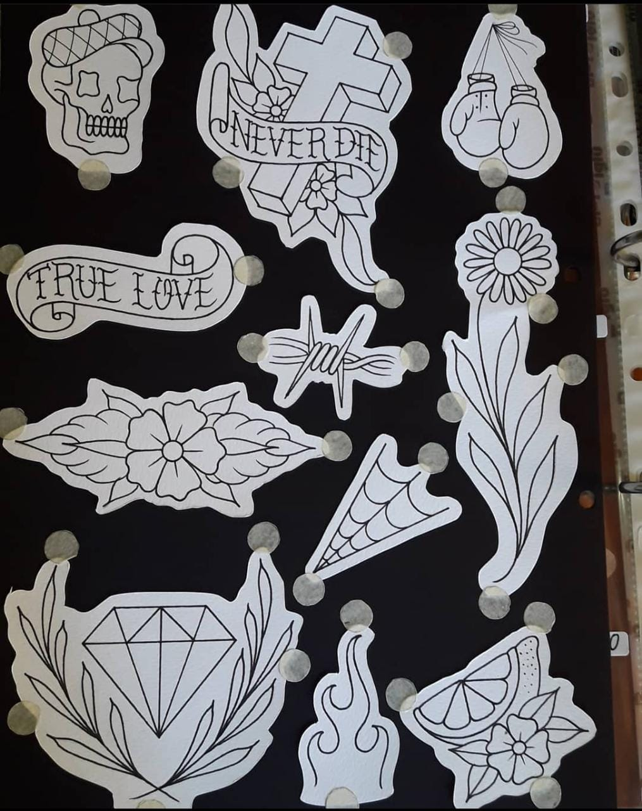
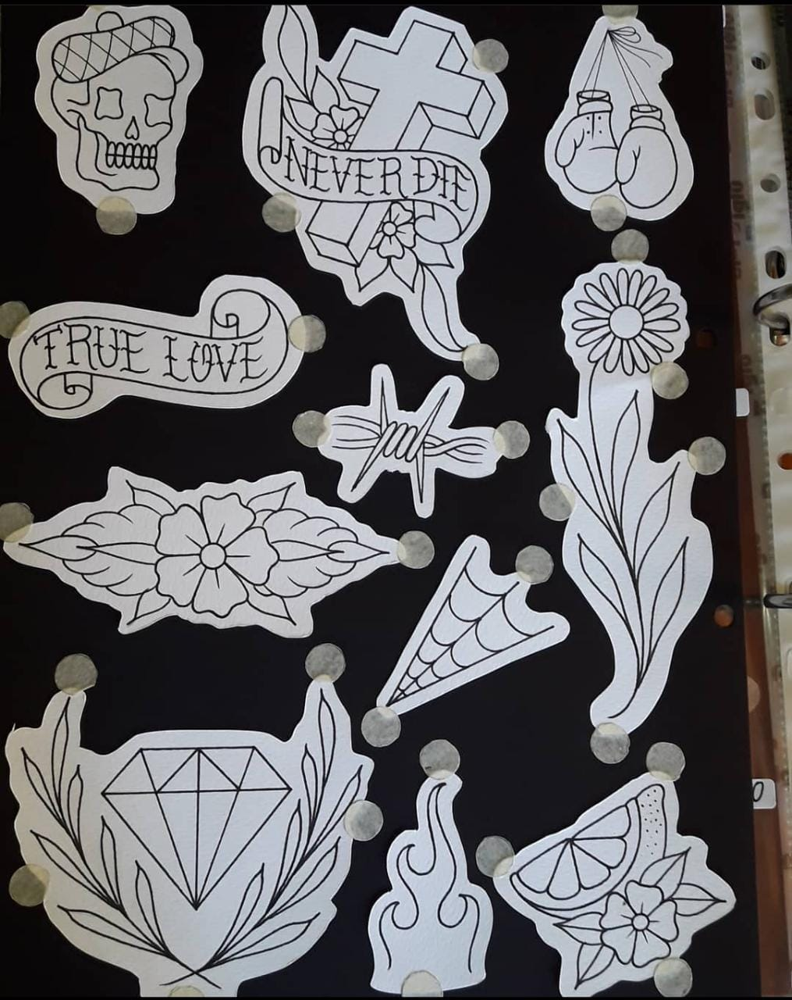

ESTILOS EN PRACTICA Y OBJETO DE ESTUDIO DEL ARTISTA
OLD SCHOOL
Esta pintura hice en base al estudio de unos de mis libros del estilo tradicional


PINTURA DE LIBRO
Es otra pintura de estudio de unos de mis libros.

LETTERING
Otro estilo que llevo estudiando, se trata del tipo de letra script informal y el custom gótico.

FLASHES
Estos diseños se le llaman flashes, están pensados para hacer tatuajes rápidos sin cita previa.

 
